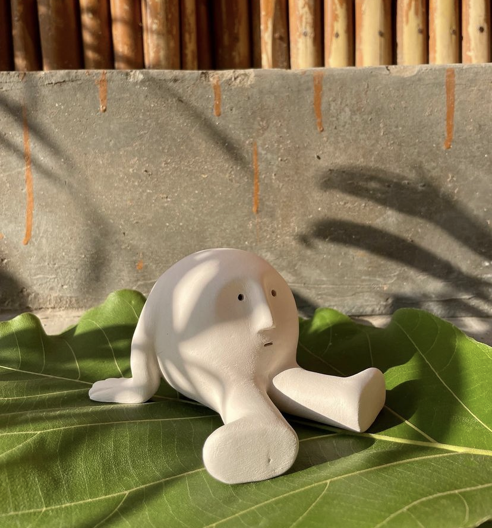
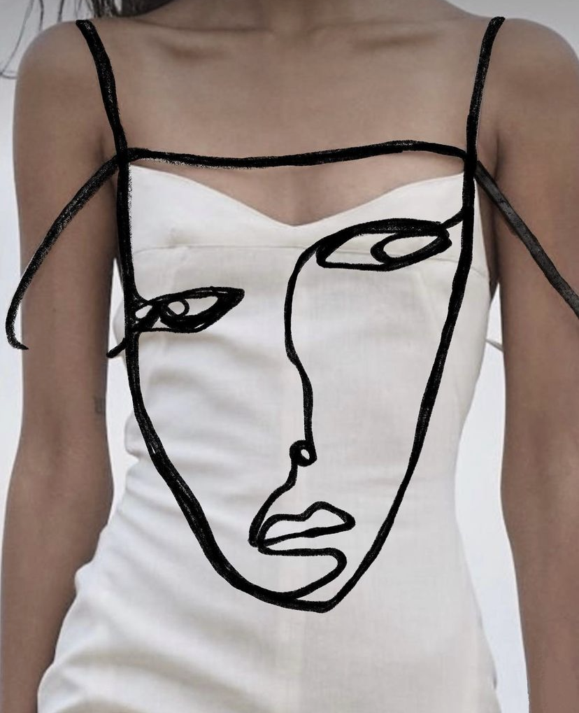
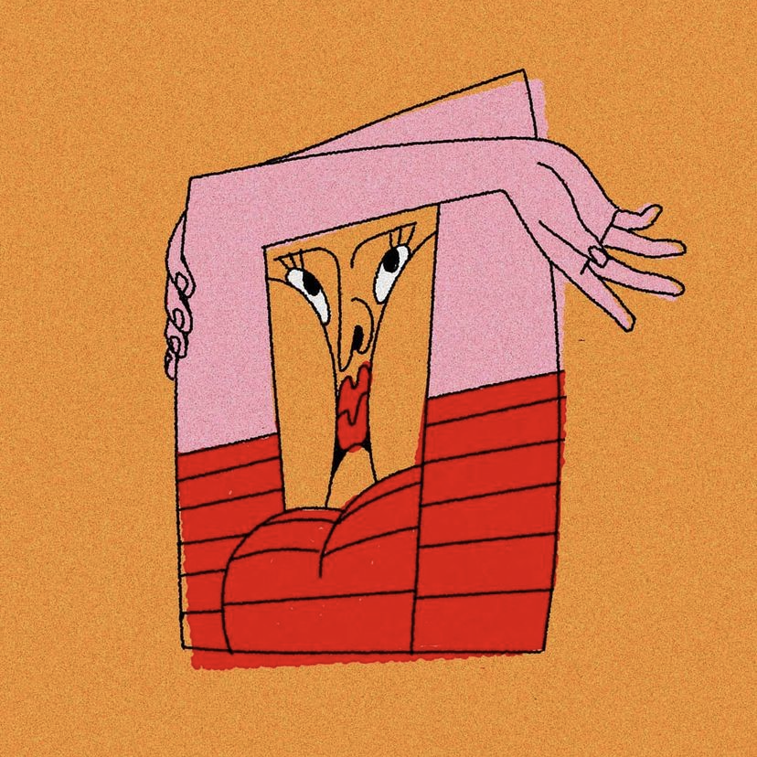
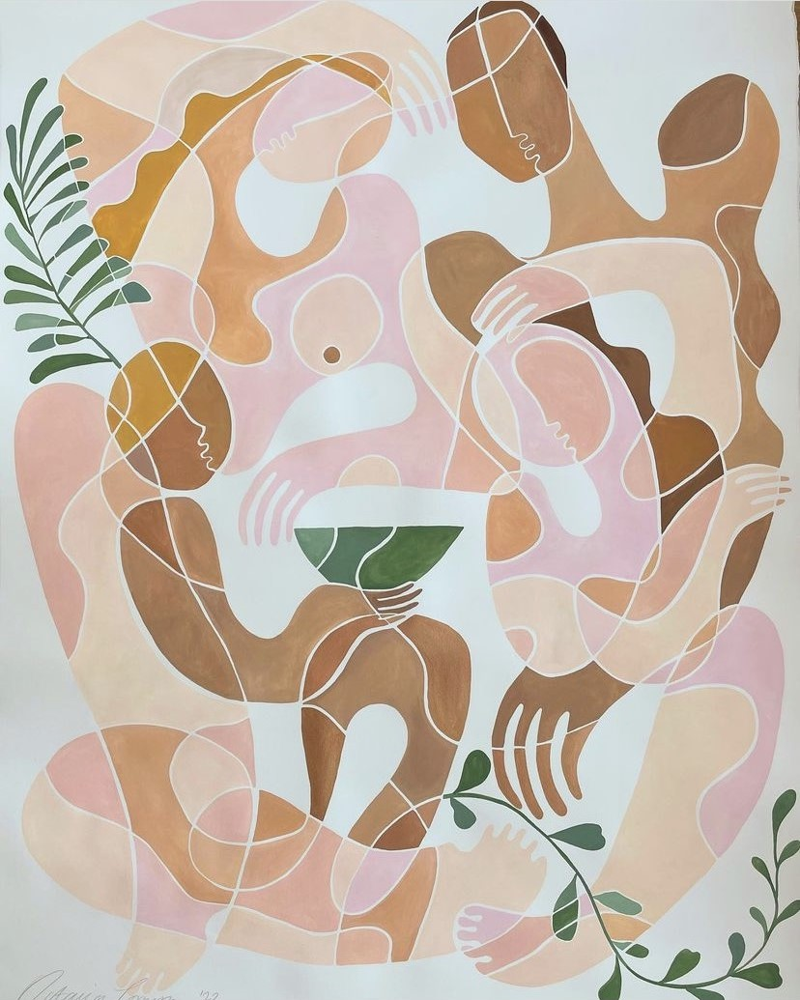
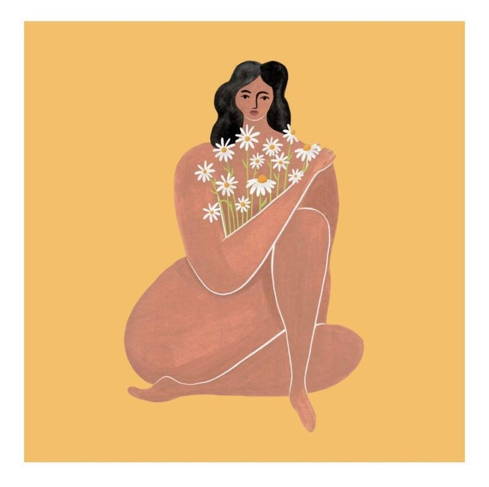
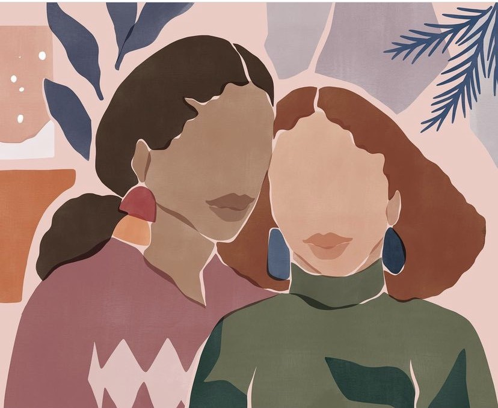

My Artwork
I have a knack for creating abstract human faces. It's something that I stumbled upon while experimenting with different art forms, and I quickly realized that I had a natural affinity for it. I love being able to create faces that are both recognizable and ethereal, blurring the lines between reality and imagination. When I'm working on an abstract human face, I feel like I'm tapping into something deeper, something that connects me to the human experience in a profound way. Therefore, these are some of my quick doodles which explore different abstractions of human faces..
My top 3 artists
I have mentioned below my three most favorite artists along with their instagram handles and link to their official website. These artists specifically work with different mediums to create abstract artwork on human forms. Do check these out!
-
Aman Khanna
 -
Shira Barzilay
 -
Andela Jankovic

Some more artists!
Apart from my top 3 favorite artists, these are a few more artists whose work I really admire. I have linked below their website and instagram handles. I hope you enjoy going through my collection!
-
Octavia Tomyn
 -
Galiz
 -
Sacree Frangine
